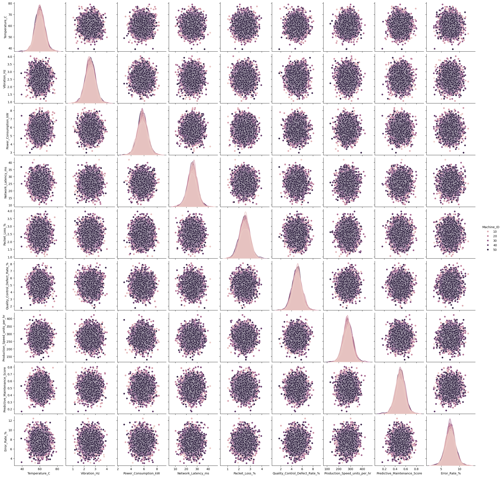
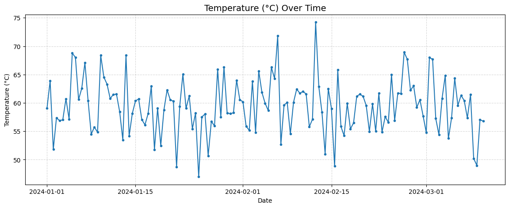
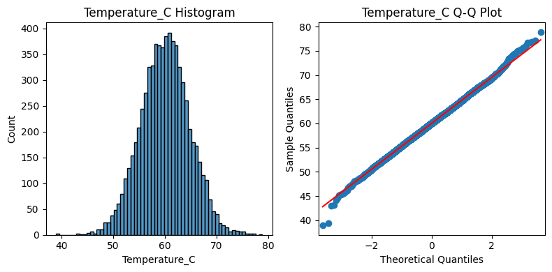
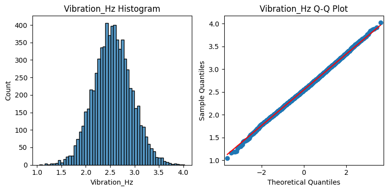
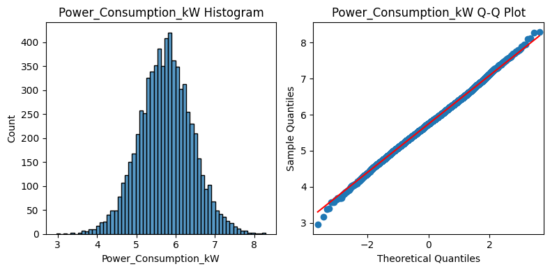
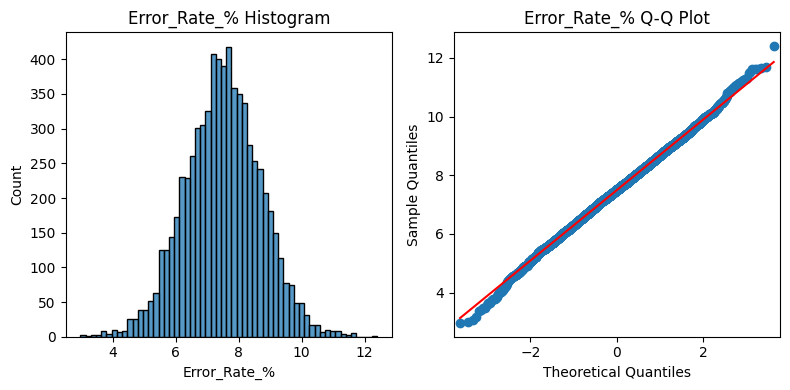

import pandas as pd
import numpy as np
import matplotlib.pyplot as plt
import seaborn as sns
import statsmodels.api as smData Exploration/Cleaning for Manufacturing 6G dataset
Date: 08/11/2025
mfg_data = pd.read_csv('..\data\manufacturing_6G_dataset.csv')mfg_data.head()| Timestamp | Machine_ID | Operation_Mode | Temperature_C | Vibration_Hz | Power_Consumption_kW | Network_Latency_ms | Packet_Loss_% | Quality_Control_Defect_Rate_% | Production_Speed_units_per_hr | Predictive_Maintenance_Score | Error_Rate_% | Efficiency_Status | |
|---|---|---|---|---|---|---|---|---|---|---|---|---|---|
| 0 | 2024-01-01 00:00:00 | 39 | Idle | 74.137590 | 3.500595 | 8.612162 | 10.650542 | 0.207764 | 7.751261 | 477.657391 | 0.344650 | 14.965470 | Low |
| 1 | 2024-01-01 00:01:00 | 29 | Active | 84.264558 | 3.355928 | 2.268559 | 29.111810 | 2.228464 | 4.989172 | 398.174747 | 0.769848 | 7.678270 | Low |
| 2 | 2024-01-01 00:02:00 | 15 | Active | 44.280102 | 2.079766 | 6.144105 | 18.357292 | 1.639416 | 0.456816 | 108.074959 | 0.987086 | 8.198391 | Low |
| 3 | 2024-01-01 00:03:00 | 43 | Active | 40.568502 | 0.298238 | 4.067825 | 29.153629 | 1.161021 | 4.582974 | 329.579410 | 0.983390 | 2.740847 | Medium |
| 4 | 2024-01-01 00:04:00 | 8 | Idle | 75.063817 | 0.345810 | 6.225737 | 34.029191 | 4.796520 | 2.287716 | 159.113525 | 0.573117 | 12.100686 | Low |
# Setting right feature type
mfg_data['Timestamp'] = pd.to_datetime(mfg_data['Timestamp'])
mfg_data['Machine_ID'] = mfg_data['Machine_ID'].astype('object')#Find Categorical Features on childcare_costs dataset
def cat_features_explore(df):
def calc_unique_counts(df,col_name):
col = df[col_name]
unique_val = col.unique()
plt.figure(figsize=(12,4))
sns.countplot(data=df, x=col_name)
plt.title(f'Categories for {col_name}')
plt.tight_layout()
plt.show()
return len(unique_val)
cat_cols = mfg_data.select_dtypes(include="object").columns.to_list()
count_dic = {col:calc_unique_counts(mfg_data,col) for col in cat_cols}
print(count_dic)
cat_features_explore(mfg_data)
{'Machine_ID': 50, 'Operation_Mode': 3, 'Efficiency_Status': 3}def plot_hist_qq(df,col_name):
col = df[col_name]
fig, (ax1, ax2) = plt.subplots(ncols=2,nrows=1,figsize=(8, 4))
sns.histplot(col, linewidth=1,ax=ax1)
#sns.kdeplot(col, linewidth=5,ax=ax1)
ax1.set_title(col_name + ' Histogram')
sm.qqplot(col,line='s',ax=ax2)
ax2.set_title(col_name + ' Q-Q Plot')
plt.tight_layout()
plt.show()
def calculate_stats(df,col_name):
print (f"{col_name} Mean: {df[col_name].mean():.2f}")
print (f"{col_name} Median: {df[col_name].median():.2f}")
print (f"{col_name} Max: {df[col_name].max():.2f}")
print (f"{col_name} Min: {df[col_name].min():.2f}")
print (f"{col_name} Standard Deviation: {df[col_name].std():.2f}")
print (f"{col_name} Number of Points: {len(df[col_name]):.0f}")
for col in mfg_data.select_dtypes(include="number").columns.to_list():
plot_hist_qq(mfg_data[mfg_data['Machine_ID']==2],col)
calculate_stats(mfg_data[mfg_data['Machine_ID']==2],col)Temperature_C Mean: 59.81
Temperature_C Median: 59.98
Temperature_C Max: 89.94
Temperature_C Min: 30.03
Temperature_C Standard Deviation: 17.64
Temperature_C Number of Points: 2041Vibration_Hz Mean: 2.53
Vibration_Hz Median: 2.59
Vibration_Hz Max: 5.00
Vibration_Hz Min: 0.10
Vibration_Hz Standard Deviation: 1.42
Vibration_Hz Number of Points: 2041Power_Consumption_kW Mean: 5.72
Power_Consumption_kW Median: 5.68
Power_Consumption_kW Max: 10.00
Power_Consumption_kW Min: 1.50
Power_Consumption_kW Standard Deviation: 2.46
Power_Consumption_kW Number of Points: 2041Network_Latency_ms Mean: 25.45
Network_Latency_ms Median: 25.34
Network_Latency_ms Max: 49.98
Network_Latency_ms Min: 1.02
Network_Latency_ms Standard Deviation: 14.02
Network_Latency_ms Number of Points: 2041Packet_Loss_% Mean: 2.52
Packet_Loss_% Median: 2.56
Packet_Loss_% Max: 5.00
Packet_Loss_% Min: 0.01
Packet_Loss_% Standard Deviation: 1.41
Packet_Loss_% Number of Points: 2041Quality_Control_Defect_Rate_% Mean: 5.01
Quality_Control_Defect_Rate_% Median: 5.00
Quality_Control_Defect_Rate_% Max: 9.98
Quality_Control_Defect_Rate_% Min: 0.00
Quality_Control_Defect_Rate_% Standard Deviation: 2.90
Quality_Control_Defect_Rate_% Number of Points: 2041Production_Speed_units_per_hr Mean: 274.51
Production_Speed_units_per_hr Median: 270.07
Production_Speed_units_per_hr Max: 499.98
Production_Speed_units_per_hr Min: 50.35
Production_Speed_units_per_hr Standard Deviation: 129.23
Production_Speed_units_per_hr Number of Points: 2041Predictive_Maintenance_Score Mean: 0.49
Predictive_Maintenance_Score Median: 0.48
Predictive_Maintenance_Score Max: 1.00
Predictive_Maintenance_Score Min: 0.00
Predictive_Maintenance_Score Standard Deviation: 0.29
Predictive_Maintenance_Score Number of Points: 2041Error_Rate_% Mean: 7.52
Error_Rate_% Median: 7.48
Error_Rate_% Max: 15.00
Error_Rate_% Min: 0.00
Error_Rate_% Standard Deviation: 4.38
Error_Rate_% Number of Points: 2041mfg_data.select_dtypes(include="number").columns.to_list()
plt.figure(figsize=(10,6))
sns.pairplot(mfg_data, diag_kind='kde',hue='Efficiency_Status')
plt.show()<Figure size 1000x600 with 0 Axes>
DATA PREPARATION FOR ANOMALY DETECTION
#mfg_data_2 = mfg_data.groupby(['Machine_ID',mfg_data["Timestamp"].dt.date]).mean(numeric_only=True).reset_index()
mfg_data_2 = (
mfg_data
.groupby([
'Machine_ID',
mfg_data["Timestamp"].dt.floor('12H') # rounds Timestamp down to the hour
])
.mean(numeric_only=True)
.reset_index()
)
mfg_data_2['Machine_ID'] = mfg_data_2['Machine_ID'].astype('object')
mfg_data_2['Timestamp'] = pd.to_datetime(mfg_data_2['Timestamp'])
mfg_data_2.head()C:\Users\cesar\AppData\Local\Temp\ipykernel_36112\373264414.py:7: FutureWarning: 'H' is deprecated and will be removed in a future version, please use 'h' instead.
mfg_data["Timestamp"].dt.floor('12H') # rounds Timestamp down to the hour| Machine_ID | Timestamp | Temperature_C | Vibration_Hz | Power_Consumption_kW | Network_Latency_ms | Packet_Loss_% | Quality_Control_Defect_Rate_% | Production_Speed_units_per_hr | Predictive_Maintenance_Score | Error_Rate_% | |
|---|---|---|---|---|---|---|---|---|---|---|---|
| 0 | 1 | 2024-01-01 00:00:00 | 59.027691 | 3.273465 | 6.871082 | 23.445160 | 2.308684 | 4.684600 | 349.632925 | 0.392129 | 6.939090 |
| 1 | 1 | 2024-01-01 12:00:00 | 63.907350 | 2.021363 | 4.978956 | 30.675345 | 2.408669 | 5.366573 | 321.184645 | 0.410275 | 7.534709 |
| 2 | 1 | 2024-01-02 00:00:00 | 51.808176 | 2.047471 | 6.029171 | 31.269433 | 1.834945 | 6.899124 | 363.738970 | 0.522837 | 6.831884 |
| 3 | 1 | 2024-01-02 12:00:00 | 57.371817 | 2.646207 | 5.790383 | 28.433255 | 3.047640 | 5.324885 | 294.783106 | 0.425722 | 5.794327 |
| 4 | 1 | 2024-01-03 00:00:00 | 56.866279 | 2.500103 | 7.077736 | 29.890366 | 3.134400 | 5.549209 | 302.052996 | 0.307520 | 7.169374 |
mfg_data_2.select_dtypes(include="number").columns.to_list()
plt.figure(figsize=(10,6))
sns.pairplot(mfg_data_2, diag_kind='kde',hue='Machine_ID')
plt.show()<Figure size 1000x600 with 0 Axes>
machine_1 =mfg_data_2[mfg_data_2['Machine_ID']==1]
start_date = "2024-01-01"
end_date = "2024-12-30"
tred_plot_df = machine_1[(machine_1["Timestamp"] >= start_date) & (machine_1["Timestamp"] <= end_date)]
plt.figure(figsize=(14, 5))
plt.plot(tred_plot_df["Timestamp"], tred_plot_df["Temperature_C"], marker="o", markersize=3, linestyle="-")
plt.title("Temperature (°C) Over Time", fontsize=14)
plt.xlabel("Date")
plt.ylabel("Temperature (°C)")
plt.grid(True, linestyle="--", alpha=0.5)
for col in mfg_data_2.select_dtypes(include="number").columns.to_list():
plot_hist_qq(mfg_data_2,col) 



#Outliers Overview
def report_quantity_outliers(df):
for col in df.columns:
q25 = df[col].quantile(0.25)
q75 = df[col].quantile(0.75)
iqr = q75 - q25
lower_bound = q25 - 1.5 * iqr
upper_bound = q75 + 1.5 * iqr
outliers = df[(df[col] < lower_bound) | (df[col] > upper_bound)]
print(f"{col}: {outliers.shape[0]} outliers")
num_cols = mfg_data_2.select_dtypes(include="number").columns.to_list()
report_quantity_outliers(mfg_data_2[num_cols])Temperature_C: 72 outliers
Vibration_Hz: 67 outliers
Power_Consumption_kW: 73 outliers
Network_Latency_ms: 92 outliers
Packet_Loss_%: 56 outliers
Quality_Control_Defect_Rate_%: 75 outliers
Production_Speed_units_per_hr: 72 outliers
Predictive_Maintenance_Score: 73 outliers
Error_Rate_%: 77 outliersmfg_data_2.to_csv('..\data\processed\mfg_time_series.csv',index=False)